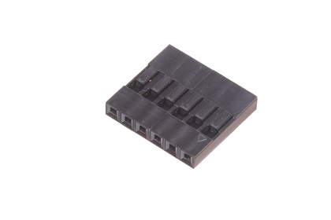
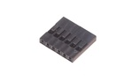
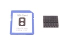

2.54 mm 6 Pin Black Crimp Housing - CH06

Summary
Name: 2.54 mm 6 Pin Black Crimp Housing
ID: CRHO-I01-B-06PI-01
Hex ID: CH06
WebPage: https://github.com/oomlout/oomlout-OOMP/wiki/CRHO-I01-B-06PI-01
Short URL: http://oom.lt/CH06
Revision History: https://github.com/oomlout/oomlout-OOMP/blob/master/parts/CRHO-I01-B-06PI-01/
| Type |
Size |
Color |
Description |
Index |
CRHO
Crimp Housing |
I01
2.54 mm |
B
Black |
06PI
6 Pin |
01
|
Images



About
These six pin connectors are often used simply when you find you have six wires that need connecting. However they can occasionally be found on a stepper motor being driven in uni-polar mode (A,B,ABCom,C,D,CDCom), or are also handy when paired with a ten pin connector to attach a parallel LCD screen to a project.
ABCom
Specifications
| Info |
Value |
| Type |
Crimp Housing |
| Size |
2.54 mm |
| Color |
Black |
| Description |
6 Pin |
| Pitch |
2.54 mm |
| Width |
15.44 mm |
| Height |
14 mm |
| Depth |
2.5 mm |
| Material |
Plastic |
| Terminal Style |
DuPont |
| Maximum Current |
3 A |
| Maximum Voltage |
250 V |
Extra Details
Spotted a mistake, want to add more? Let us know oomp@oomlout.com
All images and resources are licensed [CC BY-SA] unless otherwise stated (ie. the datasheets)